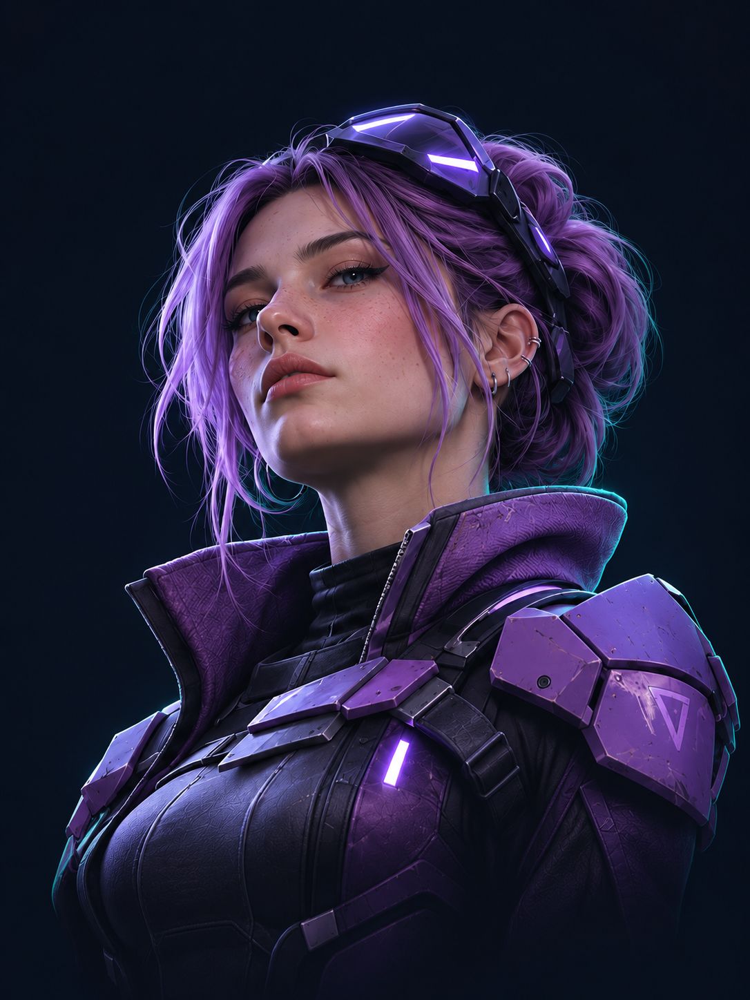
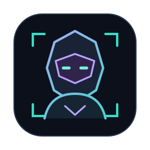
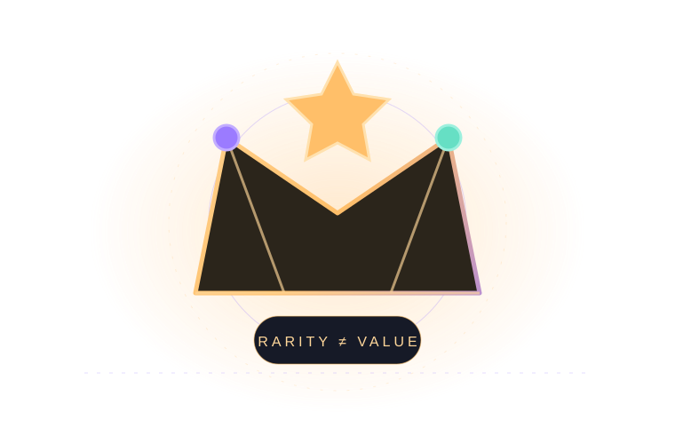
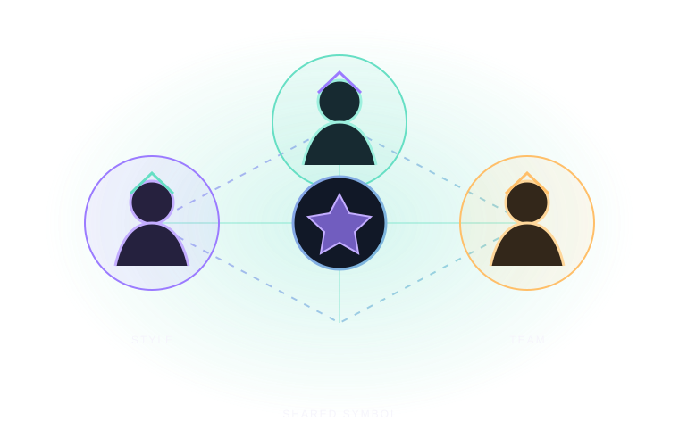
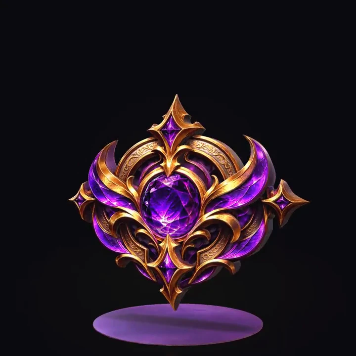
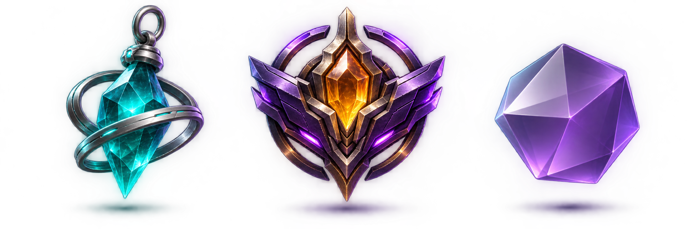
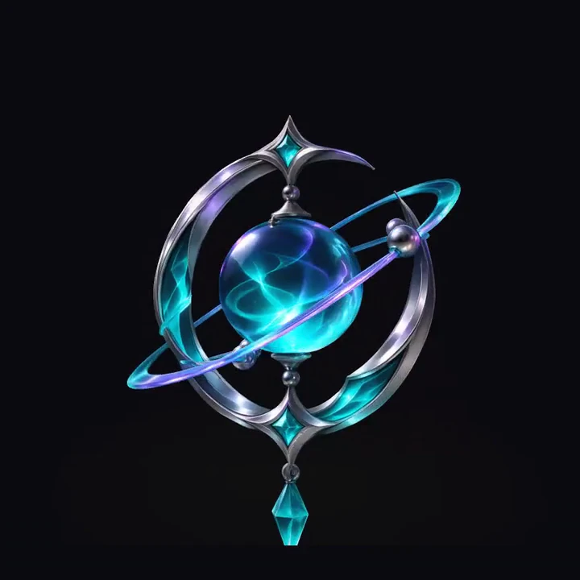

01 — Выражение
«Это похоже на меня»
Автономия
Внешний вид помогает выбрать собственный стиль и отличаться от других.
PIXEL / VALUE
Виртуальный предмет может не давать ни одной игровой единицы преимущества — и всё равно иметь для игрока настоящую ценность.

Косметический предмет работает как сигнал: «это мой стиль», «я чего-то достиг», «я часть команды». Поэтому покупка может быть не столько про функцию, сколько про смысл.
Внешний вид помогает выбрать собственный стиль и отличаться от других.
Редкость и узнаваемость иногда считываются как знак опыта или статуса.
Предмет может связывать с друзьями, командой или игровым сообществом.
Цель — понять мотивы покупки и соотнести их с тремя психологическими потребностями теории самоопределения.
Это предположение, которое проверяется данными опроса. Оно не утверждает, что так происходит всегда и у всех.
Автономия, компетентность и связанность используются как рамка для чтения ответов, а не как измерительная шкала.
Теория самоопределения описывает три базовые психологические потребности. Это рамка для интерпретации мотивов — не утверждение, что любой скин автоматически их удовлетворяет.

Самовыражение, личный вкус, ощущение собственного выбора.

Мастерство, достижение, редкость и признание со стороны других.

Друзья, команда, сообщество и общие символы.
Концепция «расширенного Я» объясняет, почему цифровое владение может иметь личный смысл: предмет связывается со вкусом, памятью, уникальностью и образом, который человек хочет показать.
То, что игрок выбирает и показывает другим в игровом пространстве.
Предмет связывается с историей владельца и его предпочтениями.
Внешний вид становится частью самопрезентации в сообществе.
В исследовании участвовали 18 учеников и знакомых примерно одного возраста. Опрос проводился лично и через мессенджеры.
Во что играют и как часто.
Покупали ли скины, пропуски или наборы.
Стиль, редкость, статус, друзья или студия.
Сопоставление ответов с SDT и Belk.
Формат не стандартизированный: ответы фиксировались со слов участников.
В основном одноклассники и знакомые — это удобно, но снижает репрезентативность.
Фиксирует ответы группы, но не устанавливает причинно-следственные связи.
играют еженедельно или чаще (см. сноску о формулировке)
Прочтение A (по подписи исходника): 13 из 18 = «ежедневно» + «несколько раз в неделю» = 72,2% — это чаще одного раза в неделю.
Прочтение B (по заголовку буквально): 13 + 3 = 16 из 18 = 88,9% — не реже раза в неделю.
Расхождение зафиксировано в отчёте аудита. Исходные числа не изменены.
10 человек покупали, 8 человек не покупали.
выбрали стиль / самовыражение как главную причину — 4 из 10
Вопрос о главной причине задавался только десяти участникам, которые уже покупали предметы. Знаменатель — 10, а не 18.

Ответы не подтверждают однозначную связь для большинства: «нет» и «затрудняюсь» вместе дают 11 из 18.
Сильно влияют — 3 человека; иногда — 7; не влияют — 8. Самая частая категория — «не влияют», но «иногда» встречается почти так же часто.
Этот вопрос задавался всем 18 участникам, а не только покупателям. Поэтому его нельзя напрямую сравнивать с мотивом «влияние друзей» среди 10 покупателей.
Знаменатели разные: 4/10 — среди покупателей; 7/18 и 3/18 — среди всех участников. Это не единая психометрическая шкала.
Среди покупателей. Стиль / самовыражение как главный мотив.
Среди всех участников. Связывают редкий скин со статусом.
Среди всех участников. Сильное влияние друзей на покупку.
выбрали самовыражение
видят статус в редкости
сильно учитывают
назвали главной причиной
Все данные: собственный опрос автора, n = 18. Результаты описательные; статистическая значимость и причинно-следственные выводы не заявляются.
Ценность формируется сразу несколькими факторами. Редкость сама по себе не гарантирует высокую цену: важны спрос и контекст конкретной игры.

Сколько предметов доступно и насколько сложно его получить?
Насколько игроки хотят этот предмет и готовы ли за него платить?
Что предмет сообщает о вкусе, опыте или образе владельца?
Главный вопрос: могу ли я выбрать внешний образ, не получая игрового преимущества?
Ценность — в стиле, символе и опыте владения.
Главный вопрос: не превращает ли покупка денег в преимущество над теми, кто не платит?
Риск — нарушение ощущения честного соревнования.
Valve описывает магазинные предметы как косметические: они не меняют игровой процесс.
КосметикаОтдельный игровой контекст для исследования. Конкретные предметы, их характеристики и способы получения в этой работе не рассматриваются.
Контекст исследованияRiot указывает, что косметический контент не должен давать положительного или отрицательного игрового преимущества.
КосметикаEpic подтверждает: образы не меняют хитбоксы и не дают конкурентного преимущества.
КосметикаВажно: эти игры приведены как контексты для разговора о косметике, а не как утверждение, что каждая из них использует Pay-to-Win. P2W — это покупка, дающая измеримое преимущество в игровом процессе.

Новизна и предвкушение.
«Теперь это моё».
Самовыражение и демонстрация.
Эффект новизны ослабевает.
Удовлетворение или сожаление.
Короткие анонимные реплики из разговоров, приведённые в исследовательской презентации.
Купил, потому что просто нравится, как выглядит. Не ради статуса.
В лобби сразу видно, у кого фиолет. Это как знак, что ты не новичок.
Друзья показали скин — и я тоже захотел. Но сам бы, наверное, не купил.
Монетизация может быть привлекательной и при этом прозрачной. Игроку важно понимать, что именно он покупает и сколько это стоит в реальных деньгах.
Показывать эквивалент внутриигровой валюты до подтверждения покупки.
Не заставлять покупать заметно больше монет, чем нужно для предмета.
Не использовать прямые призывы и манипулятивные сообщения.
Объяснять, что именно покупается и какие действуют права.
Разнообразие стилей поддерживает автономию.
Редкость может считываться как статус — без ложных обещаний.
Социальная связь важна, но давление не равно принадлежности.
Прозрачный эквивалент в реальных деньгах до подтверждения.
Честное исследование показывает не только результаты, но и границы их применимости.
18 участников — нельзя обобщать результаты на всех школьников или игроков.
В основном одноклассники и знакомые; выборка не репрезентативна.
CS2, Dota 2, VALORANT и Fortnite имеют разные экономики и игровые контексты.
Ответы могут не полностью отражать реальные мотивы поведения.
В этом опросе личный стиль оказался заметнее прямого социального давления. Но это вывод только о небольшой группе участников.
Внешние публикации дают теоретический контекст и не являются частью собственного опроса n = 18.
PIXEL / VALUE · Интерактивное социологическое исследование · Владислав Смирнов, 11 класс · собственный опрос: n = 18 · 2026
Контекст исследования, словарь данных, аудит числовых показателей, спецификации диаграмм, описание каркаса 16:9, дизайн-система, доступность, отчёт о качестве, материалы и журнал изменений. Все разделы описывают реальное состояние этого файла; кнопки во вкладке «Диагностика» выполняют настоящие проверки страницы.
Единственный источник правды о числах исследования. Значения неизменяемы, знаменатель обязателен для каждого показателя. Ниже — полный словарь данных с правилами расчёта и зафиксированными расхождениями формулировок.
Результат работы модуля аудита данных: сверка каждого числа с исходником, проверка сумм и знаменателей, поиск противоречивых формулировок и контроль цитирования. Исходные значения не изменялись — расхождения только зафиксированы и раскрыты в презентации.
Спецификации всех диаграмм презентации. Каждая содержит исходные значения, единицы, знаменатель, геометрию и альтернативное текстовое описание для скринридеров. Спецификации генерируются из того же объекта данных, что и разметка, поэтому расхождение между текстом и графиком исключено.
Как гарантированно уместить каждый кадр в область 16:9 без вертикального скролла — три уровня защиты, триггеры пересчёта и честные ограничения.
Токены дизайн-системы: палитра, типографическая шкала в единицах контейнера, отступы, радиусы, тени, параметры движения и контрольные точки адаптивности. Значения совпадают с реальными CSS-переменными этого файла.
Управление с клавиатуры, поддержка скринридеров, поведение при пониженной анимации и контраст. Всё перечисленное реализовано в этом файле.
Что реально проверено и что осталось ограничением. Автоматические прогоны браузера в этой среде недоступны, поэтому числовые оценки производительности не заявляются — статусы честные.
Материалы, лицензии и сетевые зависимости сборки.
Живая диагностика страницы. Кнопки выполняют настоящие проверки: аудит данных, пересчёт спецификаций диаграмм, измерение всех кадров 16:9 и общую самопроверку. Результаты печатаются ниже.
История изменений сборки.
В режиме презентации каждый кадр целиком помещается в область 16:9 без вертикального скролла. Если содержимое оказывается выше кадра, автоподгонка уменьшает масштаб. Клавиша F переключает автоподгонку, Y — направляющие 16:9.
Лёгкий режим включается автоматически на мобильных устройствах, при включённой экономии трафика и на устройствах с небольшим объёмом памяти или числом процессорных ядер. В нём отключаются тяжёлые размытия, движущийся фон и декоративные эффекты; изображения, данные и навигация остаются доступны.